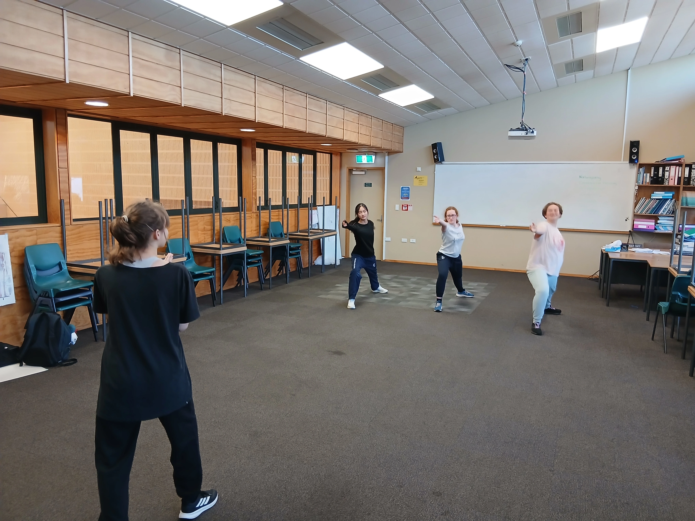
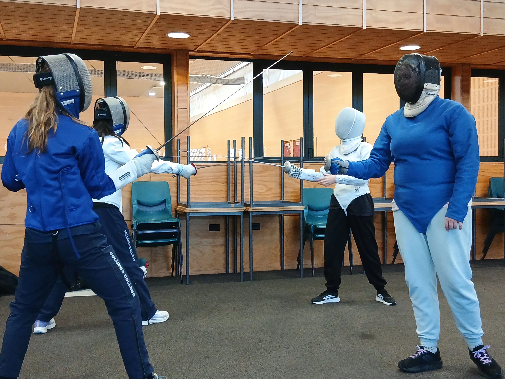
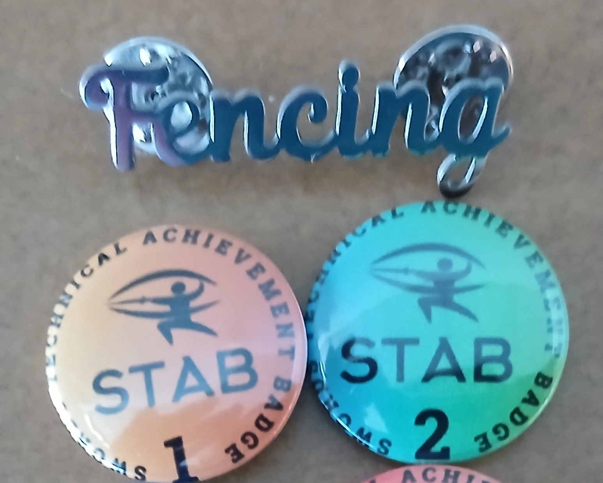
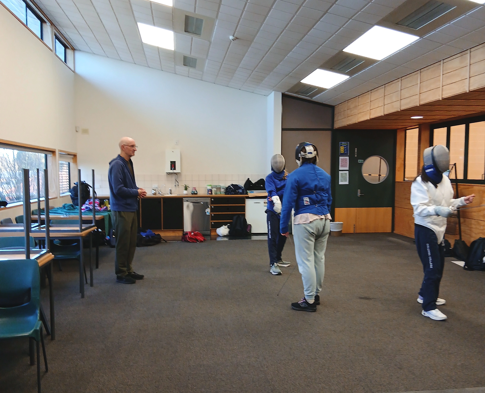
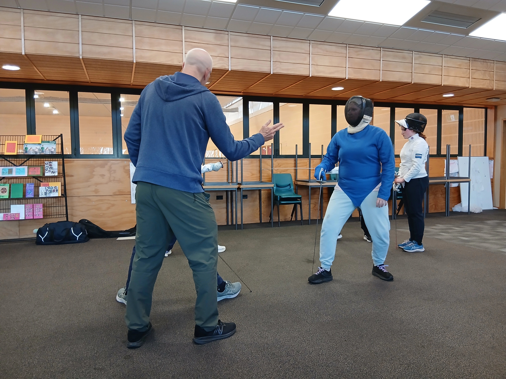
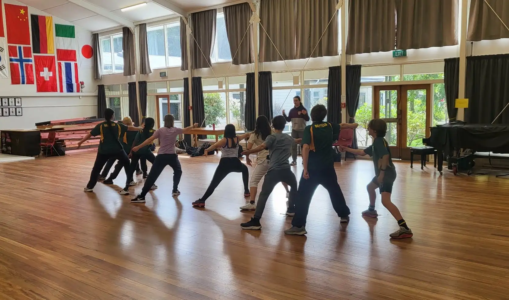
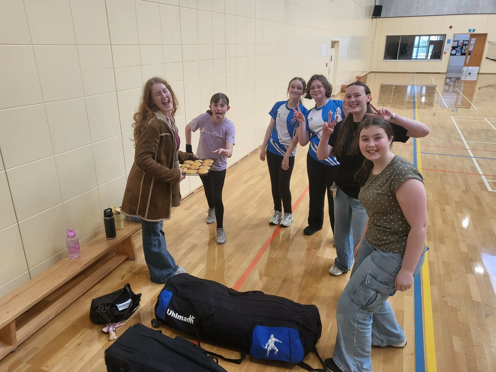
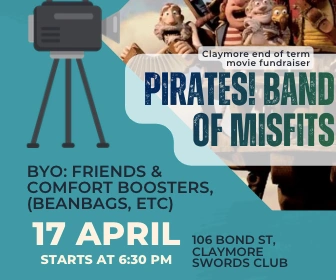

What is covered in a class and where are the classes?
The fencing practices are on Tuesday after school from 3:30 to 4:30. The location of each lesson depends on the season. Because fencing is an all year round sport, lessons continue throughout all terms. Typically in the summer terms (terms 1 and 4), lessons are located in the gym. In the winter terms (2 and 3), lessons are located in the hall. However the location may change due to other events (ie the hall is being set up for open day). Any changes in locations for the week will be notified from the fencing captain via email.
The classes follow the Sword Technical Achievement Badge (S.T.A.B.) curriculum. This curriculum is designed to teach beginners the basics then gradually increase in difficulty as the students' skills and knowledge increase, while having visible milestones. The badges are used as milestones because it helps illustrate to the students their progress as a lot of progress in fencing is not easily visible.
What is the S.T.A.B. curriculum and school model?
The Sword Technical Achievement Badge (S.T.A.B.) curriculum. As stated above this is a course designed for beginners in high school giving students milestones to aim for, as well as a clear plan on how to improve and progress their fencing. There are 5 levels, each building and expanding their knowledge in different areas. Level 1 focuses on the basics which will prepare the fencers for more complex attacks i.e. footwork and hand positions. Level 2 focuses on point control, introduces changing the attack position and introducing preparations. Level 3 introduces varying timing of the pressure to control yours and your opponent's blade. Level 4 introduces umpiring, where fencers learn how to interpret, understand, and make confident decisions on who gets the point. Level 5 introduces controlling and predicting your opponents actions, and is an introduction to coaching.
This curriculum is used in schools around Dunedin such as Logan Park, Queens High School, and Bayfield. There are also end of term tournaments in which all students from each school are invited to fence against one another. Creating a friendly competition and introducing all students to a tournament style format.




What is the coaching pathway?
The coaching pathway is designed to teach students how to coach fencers and get the certifications. This requires extra lessons outside of school to receive the proper training. Fencing is a weaponed sport there are certain requirements for coaches to ensure everyone is safe during classes. One of the main goals for this program is to get the senior students who are invested in fencing to come back after they have left school and coach the fencing team they were once a part of.
Although this coaching pathway is yet to have a senior student come and coach at their school, there are many people in the coaching class, including current high school seniors which will leave school in the next 2 years. These students will come back to their school to coach their schools fencing team. If you are interested in this pathway talk to the coach about this
Fundraisers!
In order to have the funds to continue the coaches teaching at the schools, going to tournaments and the gear for each school, there are fundraisers each term. At the end of each term there is a movie fundraiser, the movies chosen because of their accurate and good fencing scenes, such as The Princess Bride. This is a good opportunity for the high school fencers to socialize with members of the wider club and community. The date of these movies are chosen closer to the time, but are typically from 6:30 to 9:30. There is popcorn, drinks, and cookies available, so bring some friends and enjoy some fun fencing movies.
Another fundraiser which happens, is the cookie fundraiser. This is where volunteers fundraise by selling frozen cookie dough. There is a sale period of 4 weeks, and pick up times are arranged by the volunteers and the buyer. This year's cookie fundraiser has already happened, but there will be a next time, so be on the lookout for when the information comes out.

